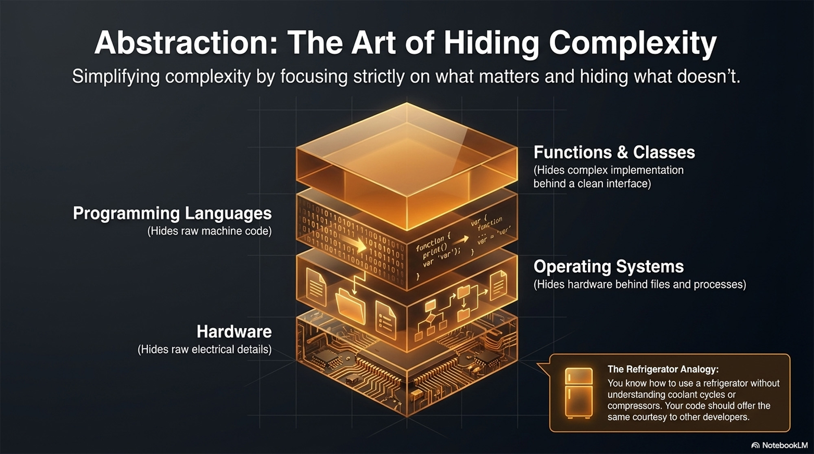
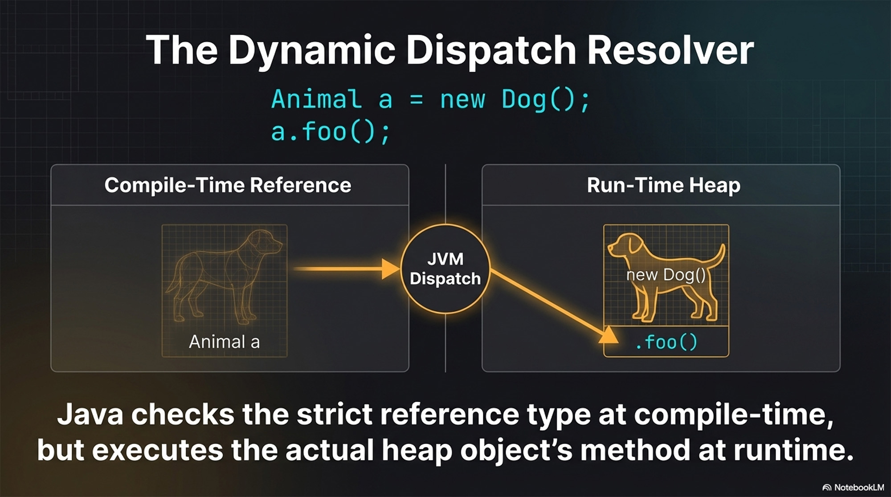
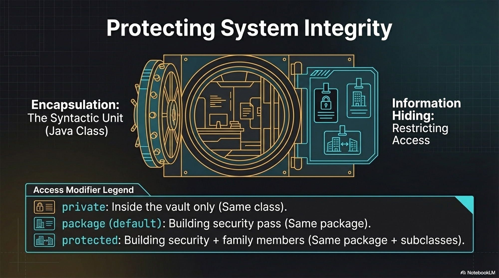
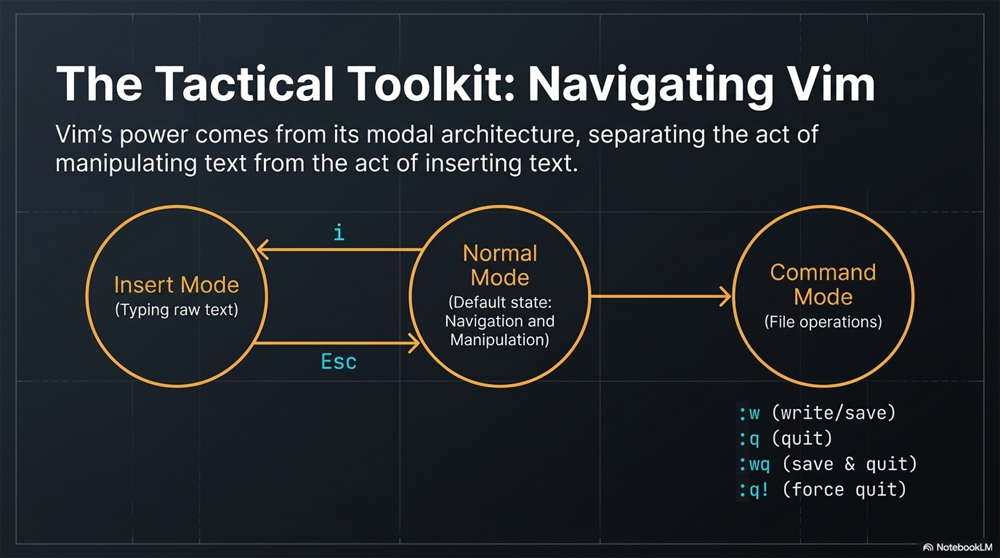
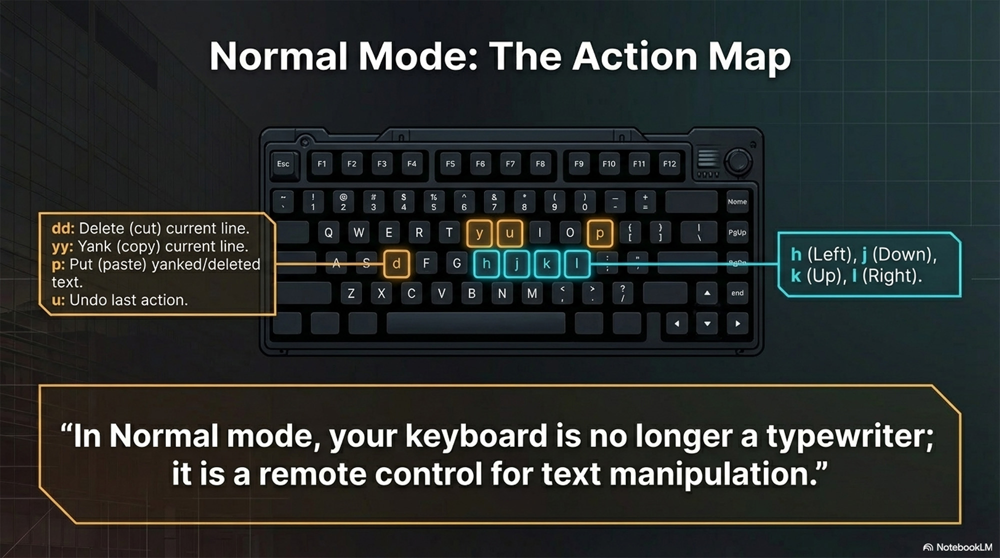

Simplifying complexity by focusing on what matters and hiding what doesn’t.
Real-world Analogy: A refrigerator. You know how to use it without understanding coolant cycles or compressors.

Abstraction: The Art of Hiding Complexity. Simplifying complexity by focusing on what matters and hiding what doesn’t. Functions and Classes (Hides complex implementation behind a clean interface). Programming Languages (Hides raw machine code). Operating Systems (Hides hardware behind files and processes)
Hardware (Hides raw electrical details). The Refrigerator analogy: You know how to use a refrigerator without understanding cooland cycles or compressors. Your code should offer the same courtesy to other developers.
Abstraction (15 mins)
Connect to the cs3667 remote VM using the VS Code Remote SSH extension.
Create a new directory using mkdir abstraction.
Inside, write an abstract class Appliance with an abstract method operate().
Then, write a concrete class Refrigerator that extends Appliance and implements the operate() method with a simple print statement.
Polymorphism
A single interface, function, or operation working with different types of data.
Subtype Polymorphism (OOP): A parent class reference pointing to a child class object.
Dynamic Dispatch: In Java, instance method calls look at the runtime object to decide which method to execute.
Animal a = new Dog();
a.foo(); // Dog's foo() method called, not Animal's

The Dynamic Dispatch Resolver. Animal a = new Dog(); a.foo(); Compile-Time Reference Animal a points to JVM Dispatch points to Run-Time Heap new Dog() .foo(). Java checks the strict reference type at compile-time, but executes the actual heap objet's mthod at runtime.
Polymorphism (20 mins)
Work in pairs.
Create a new directory using mkdir polymorphism.
Student A writes a Shape abstract class with a draw() method, and Circle/Square implementations.
Student B writes a Main class that takes an array of Shape objects and calls draw() in a loop.
Once done, pair up, read each other's code on your own screens, and discuss how dynamic dispatch resolves the method calls.
Expanded Polymorphism
Parametric Polymorphism: Functions or data structures that work with any type.
Example: Generics like List<T> in Java.
Ad Hoc Polymorphism: Multiple functions share the same name but differ in parameters (function overloading).
Can Java static methods be dynamically dispatched?
Polymorphism (20 mins)
In your polymorphism directory, create a class MathUtils.
Implement Ad Hoc polymorphism by overloading an add() method to handle two ints, three ints, and two doubles.
Next, implement Parametric polymorphism by writing a generic method printArray(T[] array) that prints any array type.
Encapsulation & Information Hiding
Encapsulation: Enclosing data and operations into a single syntactic unit (e.g., a Java class).
Information Hiding: Restricting access to certain class elements from other code elements.
Encapsulation & Information Hiding
Access Modifiers:
private: Only elements in the same class have access.
protected: Same class, subclasses, and package access.
package (default): Any class in the same package has access.
public: Accessible by any class.

Protecting System Integrity. Encapsulation: They Suntactic Unit (Java Class). Information Hiding: Restricing Access. Access Modifier Legend. private: Inside the vault only (Same class). package (default): BZuilding security pass (Same package). protected: Building security + family members (Same package + subclasses).
Encapsulation & Information Hiding (20 mins)
Create a new directory using mkdir information-hiding.
Write a poorly encapsulated BankAccount class where the balance is public.
Discuss with your partner the security implications.
Then, refactor the class to properly hide the information using private fields and public getter/setter methods that include validation logic (e.g., cannot deposit negative money).
Packages, Interfaces, & Abstract Classes
Packages: Organizational structures grouping related classes (e.g., java.util). Package names connect to project directory names.
This code would be stored in the directory path com/university/zoo.
package com.university.zoo;
Packages, Interfaces, & Abstract Classes
Interfaces: A behavior contract. Any class implementing an interface is contractually obligated to implement its methods.
Abstract Classes vs Interfaces: Abstract classes can define instance fields and implement methods.
They act as higher-level abstractions in hierarchies (e.g., Animal < Dog < Poodle).
Define an interface Breatheable with a breath() method.
Create an abstract class Animal that implements Breatheable with an abstract method makeSound().
Create a concrete class Dog extending Animal.

The Tactical Toolkit: Navigating Vim. Vim's power comes from its modal architecture, separting the act of manipulating text from the act of inserting text. Normal Mode (Default state: Navigation and Manipulation). Use i for Insert Mode (Typing raw text). Use Esc to return to Normal mode. Command Mode (FIle operations). :w (write/save), :q (quit), :wq (save and quit), :q (force quit).

Normal Mode: The Action Map. dd Delete (cut) the current line. yy Yank (copy) the current line. p Put (paste) text previously yanked or deleted. u Undo the last action. h, j, k, l Navigate Left, Down, Up, Right. In Normal mode, your keyboard is no longer a typewriter; it is a remote control for text manipulation.
Vim - Part 1 (10 mins)
Connect to the cs3667 remote VM.
Open a new file by typing vim StudentRecord.java.
Press i to enter Insert mode. Type out a basic Java class with a public static void main(String[] arg) method that prints "Hello Vim".
Press Esc to return to Normal mode.
Save your progress without quitting by typing :w and pressing Enter.
Vim - Part 2 (5 mins)
Deliberately make a mistake: press dd to delete your print statement line.
Recover from the mistake: press u to undo the deletion.
Save and exit the editor by typing :wq and pressing Enter.